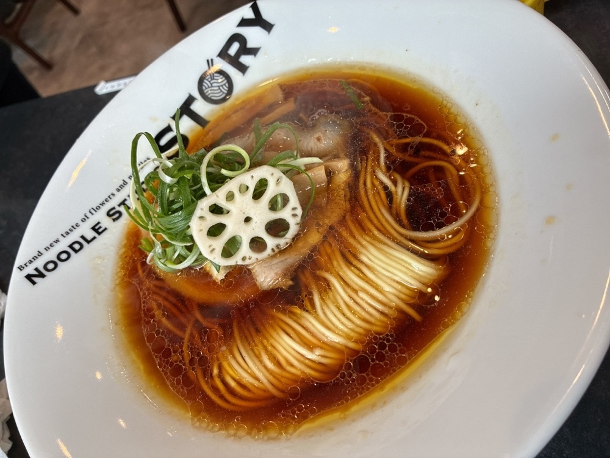
中華そば 1,000円
鶏でひいた澄んだスープに、醤油を合わせております。当店の基本の一杯です。
栃木県野木町・丸林。お花屋さんの隣のラーメン屋です。カウンター席もテーブル席もご用意しております。
スープが無くなり次第、その日は終いとさせていただきます。当日の営業と限定はXでお知らせしております。
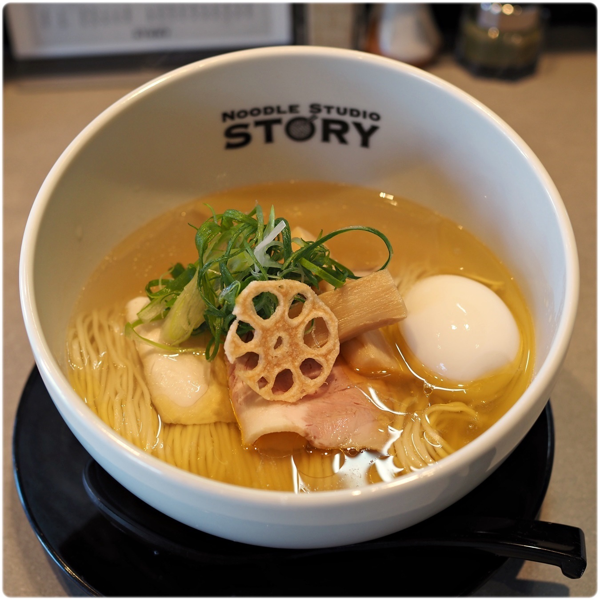
味玉塩そば（塩そば 950円＋味玉 150円）
TODAY'S ONE
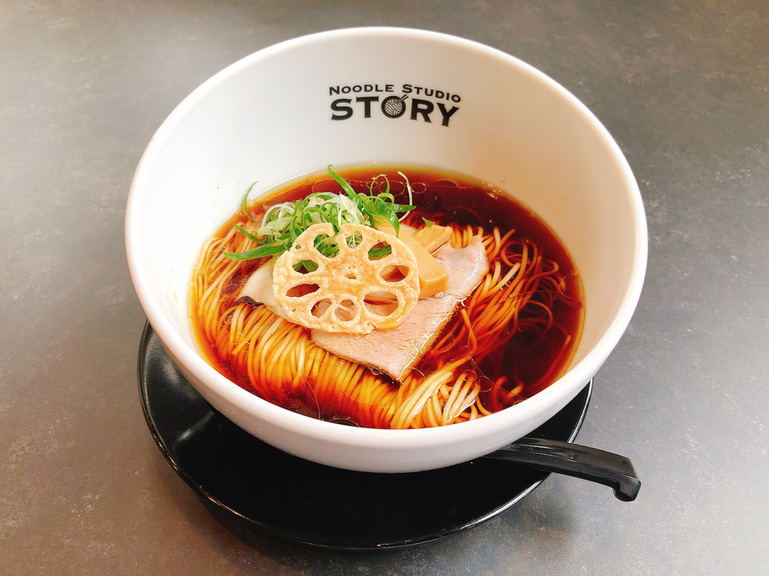
定番のほかに、その日だけの限定を一杯ご用意しております。何をお出しするかは、その日の朝にXでお知らせしております。
通し営業になる日や、閉店の時刻を早める日も、同じ場所でお知らせしております。スープが無くなり次第、その日は終いとさせていただきます。
これまでにお出しした限定から
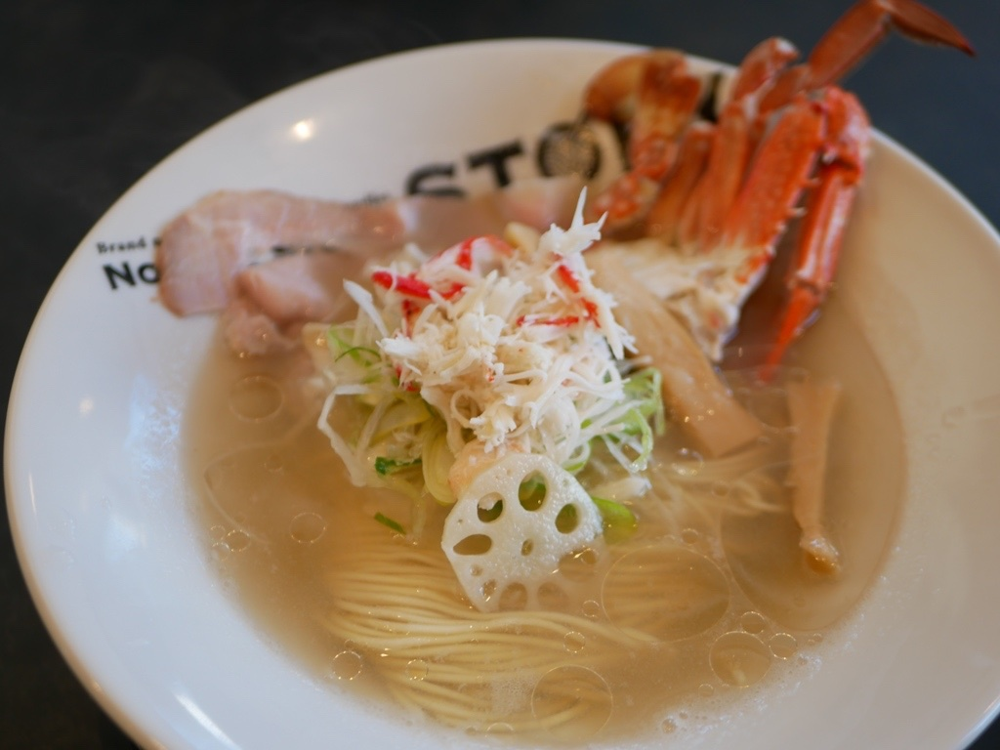
REGULARS
鶏でひいた澄んだスープを土台に、こってりと、極太と、三つの方向をご用意しております。

鶏でひいた澄んだスープに、醤油を合わせております。当店の基本の一杯です。
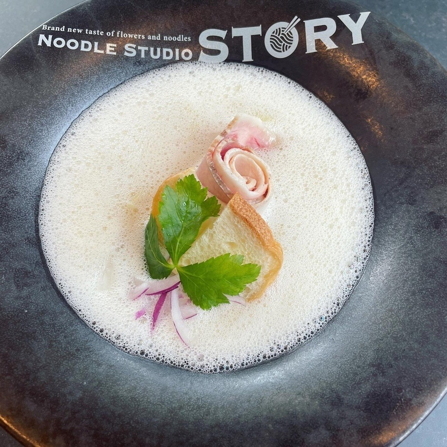
鶏と豚を合わせた、濃いめのスープです。あっさりでは物足りない日に。
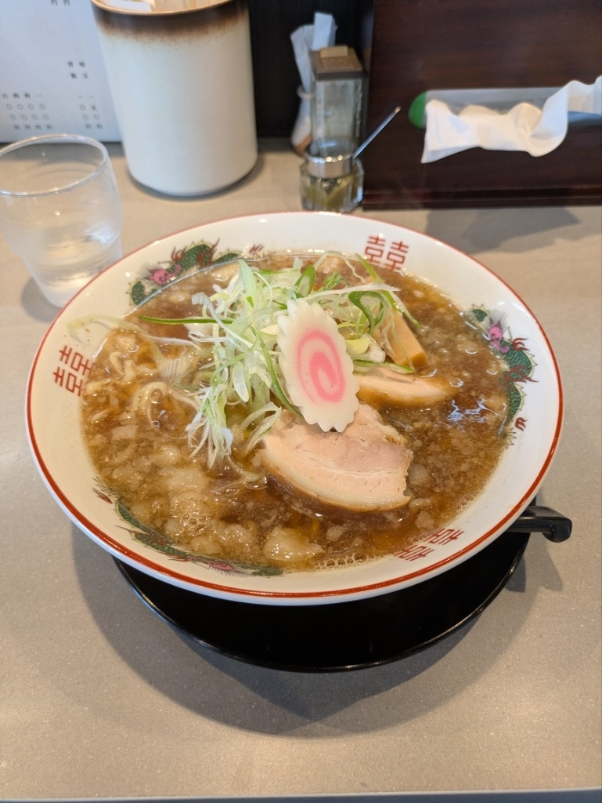
煮干しをきかせたスープに背脂を落とし、極太の麺を合わせております。
OUR NOODLES
国産の小麦をブレンドして、店で打っております。細いストレートの麺には全粒粉を合わせ、手揉みの麺もご用意しております。
替え玉と麺大盛りは各200円です。タレを絡めた和え麺も承っております。
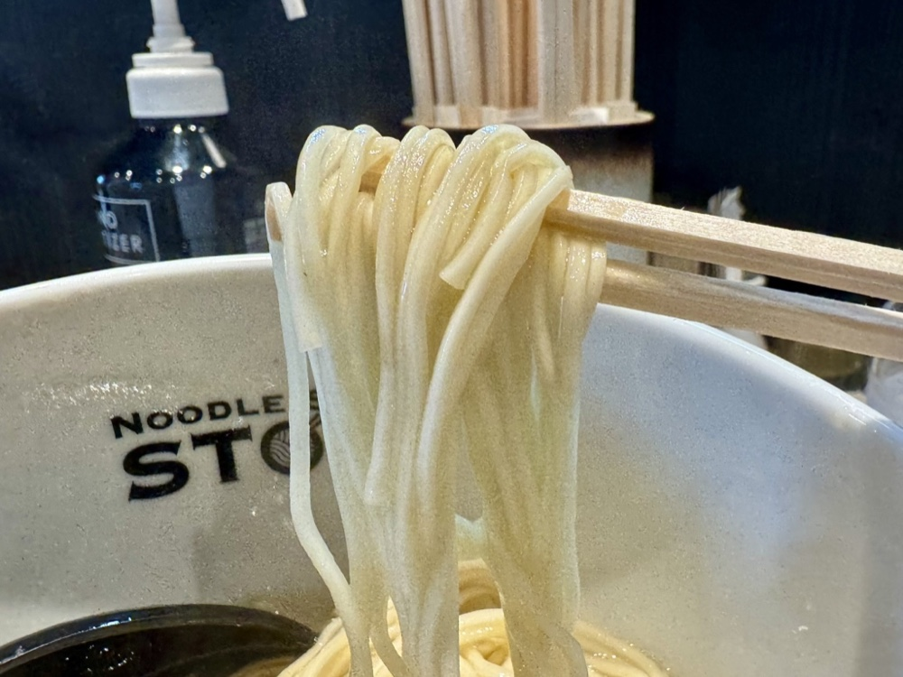
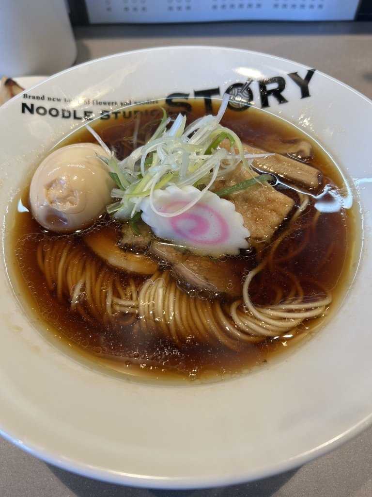
FIRST TIME
ご来店の際は、先に入口の券売機で食券をお求めください。お支払いは現金のみです。
カウンター席とテーブル席をご用意しております。おひとりでも、お連れさまとでもお気軽にお立ち寄りください。全席禁煙です。
駐車場は19台ぶんございます。お花屋さんの隣が当店です。
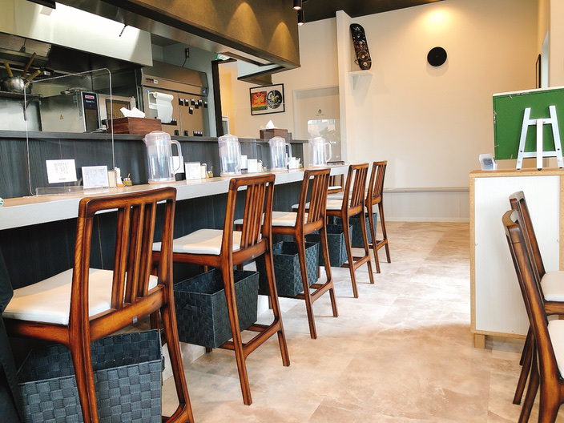
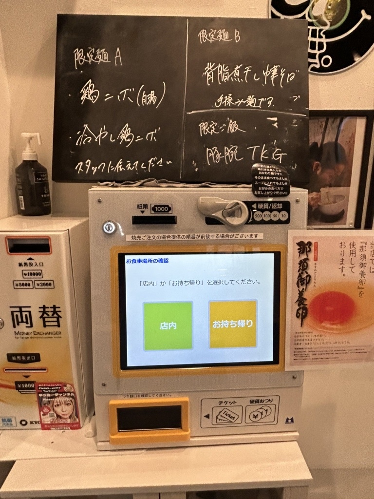
THE WALL
店内の壁には、来てくださった方からいただいたレコードやサインを飾っております。お待ちのあいだに、どうぞご覧ください。
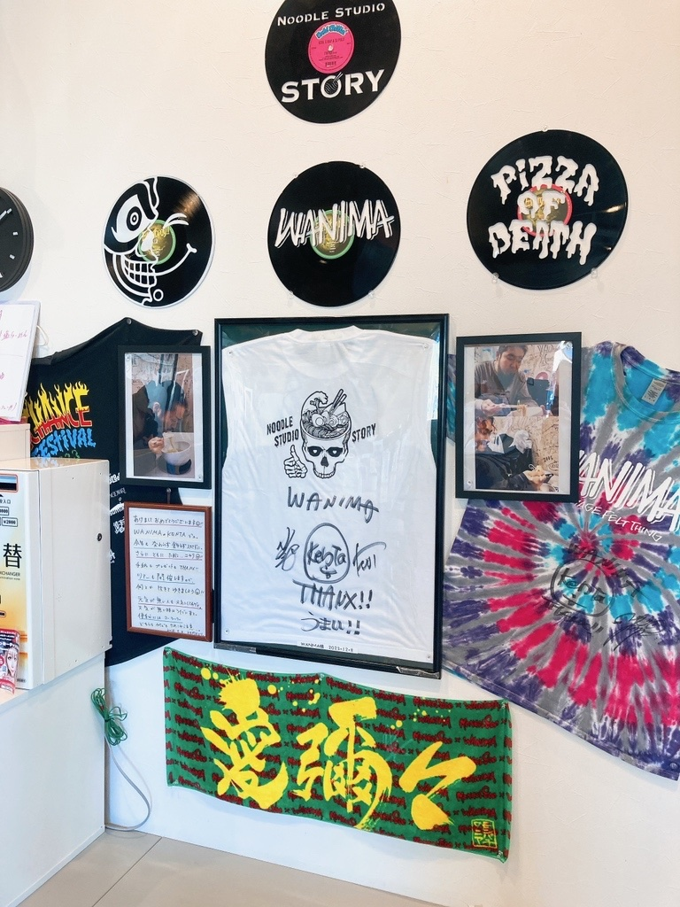
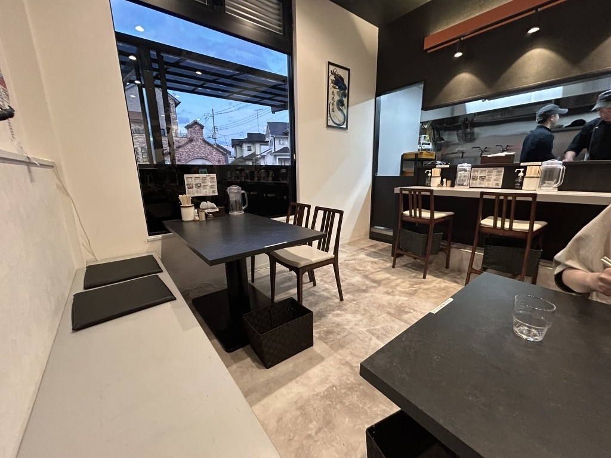
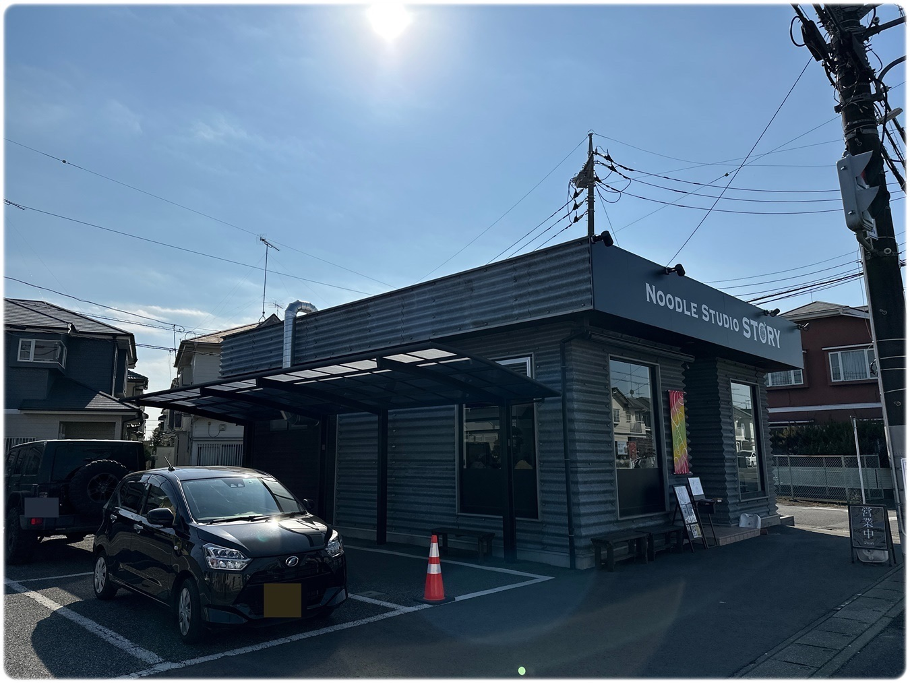
ACCESS
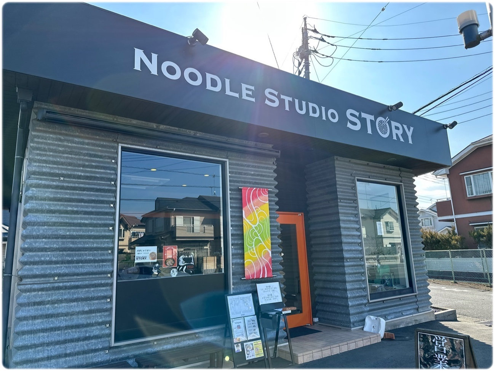
| 住所 | 〒329-0111 栃木県下都賀郡野木町丸林150-1 |
|---|---|
| 電話 | 0280-57-4611 |
| 営業時間 | 昼 11:00〜15:00（L.O. 14:30）／夜 17:00〜21:00（L.O. 20:30） 通し営業になる日や、閉店の時刻を早める日がございます。スープが無くなり次第、その日は終いとさせていただきます。当日の営業はXでお知らせしております。 |
| 定休日 | 木曜日木曜日が祝日にあたる週は、木曜日を営業し、水曜日をお休みといたします。 |
| 席 | カウンター席・テーブル席全席禁煙です。 |
| 駐車場 | 19台 |
| お支払い | 現金のみ入口の券売機で食券をお求めください。 |